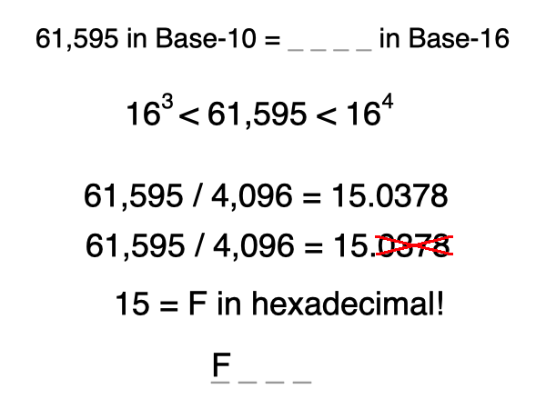
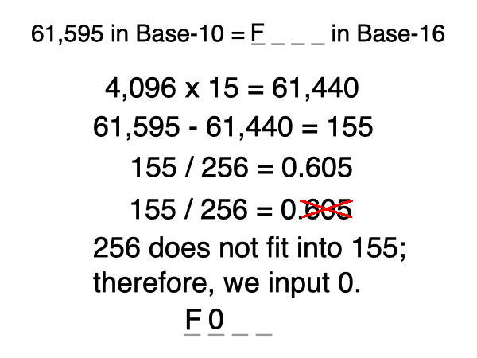
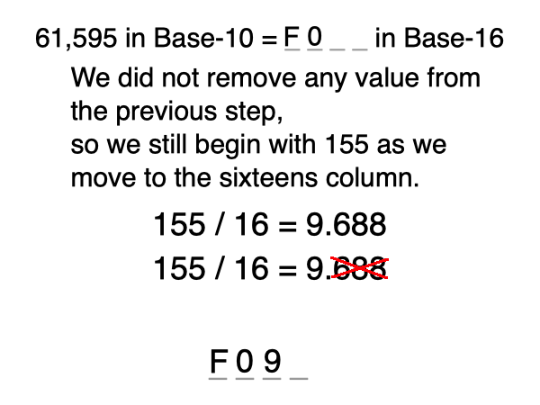
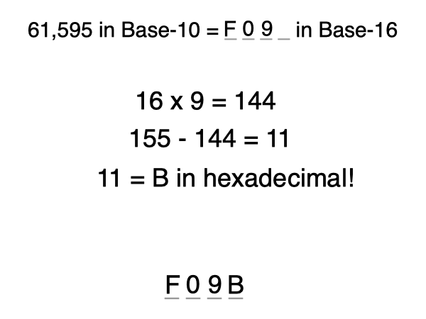
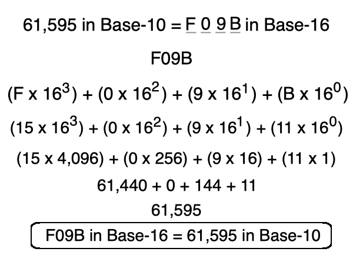

you smart good
Programming Concepts
Converting Base-10 to hexadecimal, continued
Let's do another one:
What is 61,595 in hexadecimal?
Because 64(65,536) is larger than 61,595, the larger power we will use is 4,096. Which means our sequence will be 4 numbers long.
When we divide 61,595 by 4,096, we get 15.0378. But remember, we only care about the integer (the whole number). So In the left-most place in our sequence, we need a value of 15. In Base-16, F holds the value of 15, so our first symbol will be F.

4,096 x 15 (we get these values from the column we are working with) equals 61,440. We now subtract this value from the starting value, which is 61,595.
We are left with 155. Our next power of 16 is 256. Because our power of 16 will not fit into the remaining balance as an integer, we put a 0 in this column and continue to the next column.

As we begin working on the sixteens column, we still have a remaining balance of 155.
If we divide 155 by 16, we see that 16 fits into 155 9.688 times. Because we are only using the whole number, 9 will go into the sixteens column of our sequence.

16 x 9 equals 144, so we will subtract 144 from our remaining balance of 155. We are now left with 11.
Because 11 is less than 16, we know that we can finish this sequence with one symbol. And we know that in hexadecimal, B represents 11, so the last symbol in our sequence is B!

Now that we've done examples of converting Base-10 to hexadecimal and converting hexadecimal to Base-10, we can check our work!
We found that 61,595 in Base-10 equals F09B in hexadecimal. We can now take the steps to convert F09B into Base-10 to make sure we get back to 61,595.
And with that, we can confidently state that F09B in hexadecimal equals 61,595 in Base-10!
